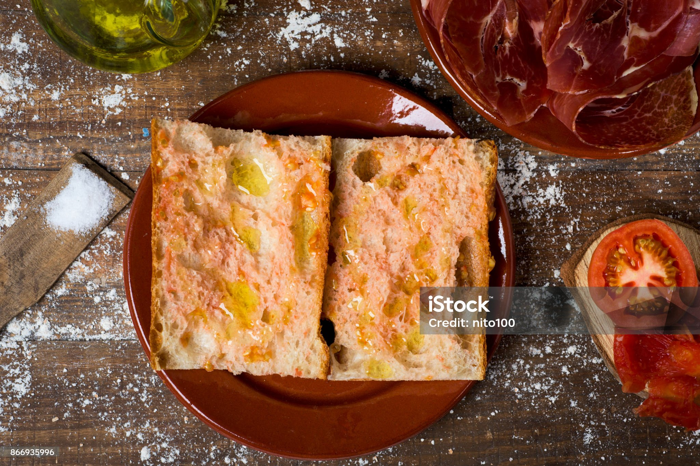
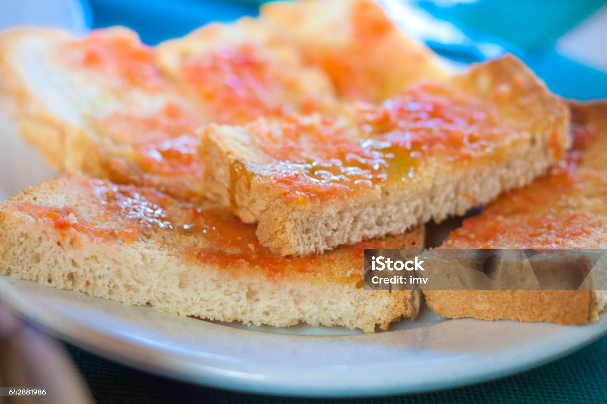
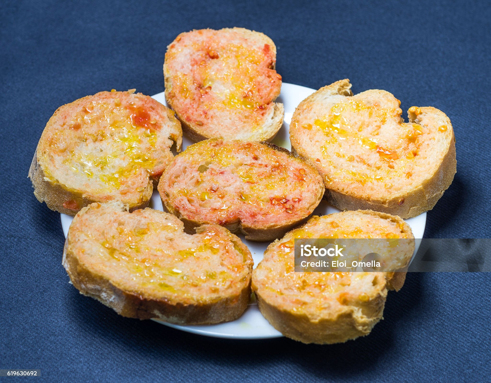
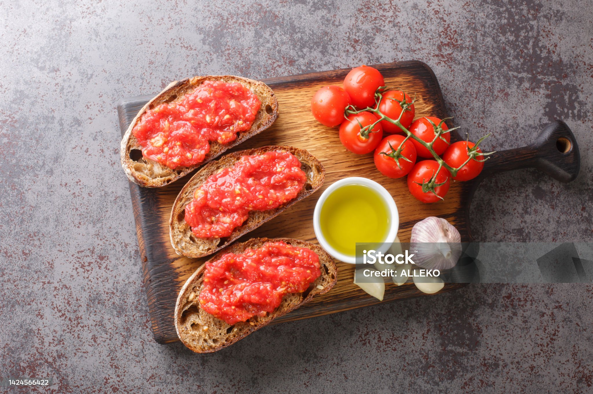

Pa amb Tomàquet
El plat més senzill i més estimat de la cuina catalana. Amb només quatre ingredients, aconseguiràs un resultat autèntic i deliciós.
- Temps: 10 minuts
- Dificultat: Molt fàcil
- Persones: 4
Ingredients
- 4 llesques de pa de pagès
- 2 tomàquets madurs
- 1 grill d'all
- Oli d'oliva verge extra
- Sal al gust
Elaboració
Comença torrant les llesques de pa a la torradora o al forn fins que quedin daurades i cruixents per fora però toves per dins. El punt de torrat és clau: ha de ser suficient per aguantar el tomàquet però sense que el pa es torni massa dur.
Mentre el pa és calent, frega cada llesca amb el grill d'all per una cara. La calor del pa ajuda a absorbir millor el sabor de l'all. Si no t'agrada l'all fort, pots fregar-lo molt suaument o fins i tot ometre aquest pas.
Talla els tomàquets per la meitat i frega'ls sobre el pa fins que quedi ben impregnat del suc i la polpa. Acaba amb un bon raig d'oli d'oliva verge extra i una mica de sal. Serveix immediatament per aprofitar la calor del pa.
Pas a pas en imatges



Valors nutricionals
Per porció (1 llesca):
| Nutrient | Quantitat | % CDR |
|---|---|---|
| Calories | 180 kcal | 9% |
| Carbohidrats | 28g | 11% |
| Greixos | 6g | 9% |
| Proteïnes | 5g | 10% |
| Fibra | 2g | 8% |
Consells del xef
- El pa: El millor pa per a aquesta recepta és el pa de pagès del dia anterior. Lleugerament sec, aguanta millor el tomàquet i l'oli sense quedar masses tou.
- El tomàquet: Utilitza tomàquets de la varietat pera o de ramallet. Són més carnosos i tenen menys aigua, cosa que fa que el pa no quedi xop.
- L'oli: No estalviïs en l'oli. Un bon oli d'oliva verge extra és la diferència entre un pa amb tomàquet bo i un d'excepcional.
- La sal: Afegeix la sal al final, just abans de servir. Així el pa manté la textura cruixent més estona.